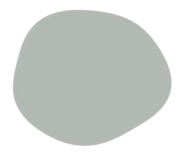
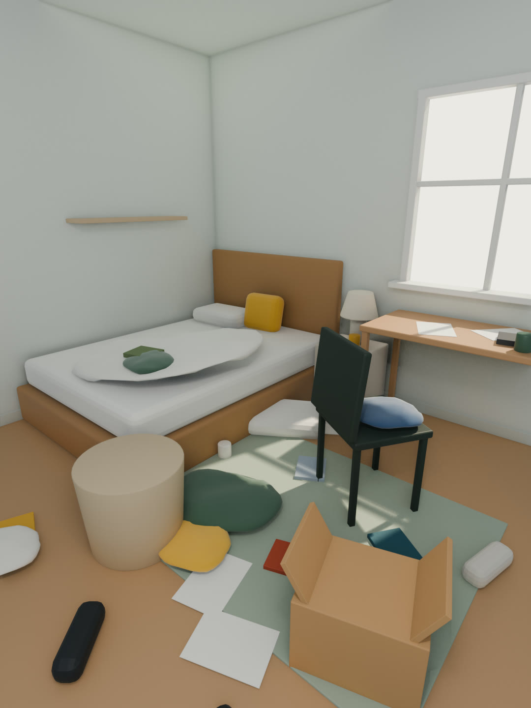
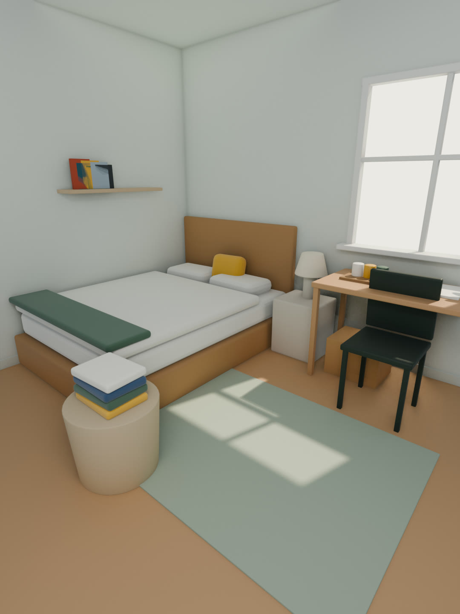

Tout retrouve sa place.
Voilà le geste central de ROOMRESET.
Faites glisser le galet dans son empreinte, ou utilisez le bouton.
Quatre études à tester au doigt
Ouvrez-les sur votre iPhone. Ajoutez ?perf=1 à l’adresse pour afficher les mesures.
Placed : trois moteurs comparés
Le galet tombe dans sa propre empreinte. Même chorégraphie en CSS, en sprites Blender et en 3D réelle.
Light Dock
Un rai de soleil désigne l’onglet actif. Balayez au pouce, touchez le galet Reset.
Sunrise Reveal
Mise au point sur l’après, puis la lumière du matin traverse la pièce.
Atmosphère vivante
Arrière-plan animé : galets et lumières 3D floutés en profondeur de champ. Shader ou sprites, au doigt et à l’inclinaison.
Une seule lumière
Les ombres des galets, le rai du dock et la lumière du Reveal suivent la même direction, qui change avec l’heure. Le soir, l’app passe en nuit verte éclairée par une lampe.
Couleur
Proposition : Air du matin, un fond vert-gris pâle cohérent avec la nuit verte, au lieu du crème. Comparez avec la palette v0. Contrastes calculés en direct, formule WCAG 2.
| Couple | Mesuré | Requis | Verdict |
|---|
Typographie
Une chose à la fois.
Bricolage Grotesque, pour les titres et les chiffres qui comptent.
Figtree porte l’interface et le texte : lisible à 17 px, chaleureuse sans être enfantine. « Rangez la vaisselle, pliez le pull, ouvrez la fenêtre. » Été, île, cœur, garçon, à côté, déjà.
Matières
Deux voies pour les galets, à comparer en mouvement dans l’étude Placed. Le CSS suit la lumière en direct ; Blender donne une vraie matière satinée, à lumière fixe.

Profondeur
- AtmosphèreVotre pièce très floutée et la lumière qui monte. Jamais interactive.
- TableLes galets, vus de dessus. La hauteur se lit dans l’ombre, pas dans la taille.
- SurfaceCartes, dock, boutons, texte. Rien n’y bouge sous le doigt sans raison.
Le monde : un chemin qui pousse
Chaque Reset ajoute au bocal un tronçon de chemin, fait des galets que vous avez placés, et une pousse naît au bout. Rien ne meurt : en votre absence, le monde se repose, et la luciole vous accueille au retour.
Images d’exemple
Une chambre originale, construite et rendue dans Blender. Même cadrage et même lumière dans les deux états : l’avant n’est jamais assombri.


À vous de choisir
- Moteur des galetsCSS, Blender ou 3D : comparez dans l’étude Placed, au doigt et avec ?perf=1.
- Palette du jourAir du matin (proposé) ou Lin (v0).
- Forme des galetsOrganique ou cercle.
- Son par défautActivé ou proposé à la première mission.